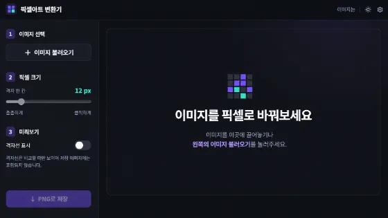
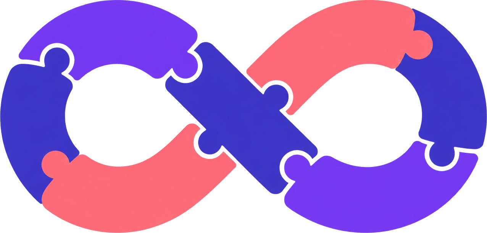

렛츠코딩 라운지 · 박람회 내부 출력 방향
시안 A작품 갤러리
작품 앞에서 시작해, 수업의 질문으로 이어지는 전시.
짙은 남색 위에 실제 화면을 크게 놓습니다.
뒤쪽 벽 · 정면 입면구조 폭 3,000mm · 벽 높이 2,500mm
학생의
아이디어가

작품이
되는

수업.

우리 수업에서는
무엇을 만들까요?
무엇을 만들까요?
바이브코딩 체험 · 수업 도입 상담
65인치 TV · 독립 거치대
제품 설명 ↔ 실제 시연
제품 설명 ↔ 실제 시연
앞 오른쪽 안내 데스크 · 전면 950 × 660mm
컨셉 시안 / 출력·시공용 아님 · 기기와 가구는 단순 도식상부 간판은 기존 시안 연계 · 이번 신규 출력 범위에서 제외